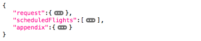
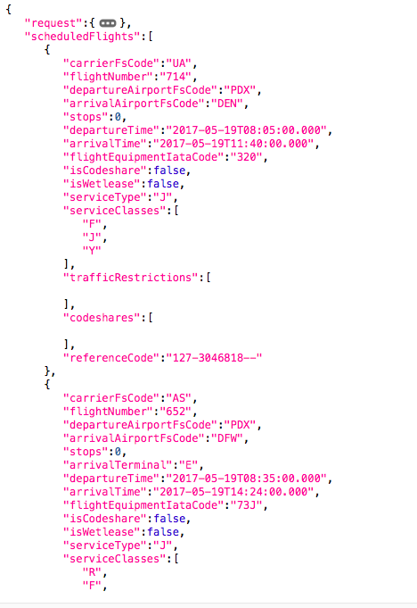
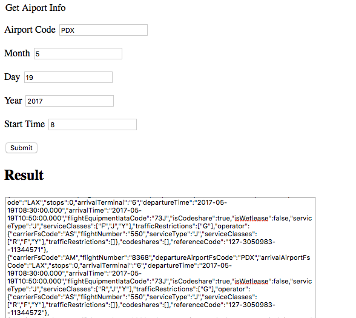
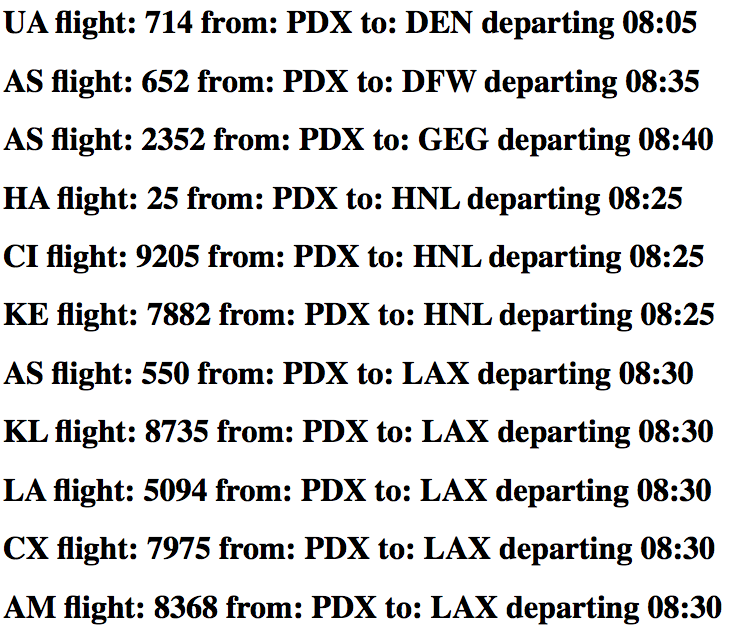
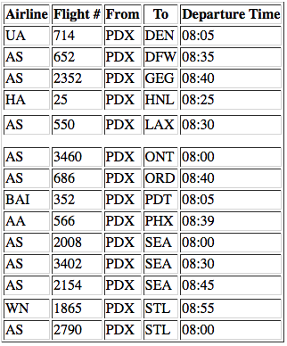
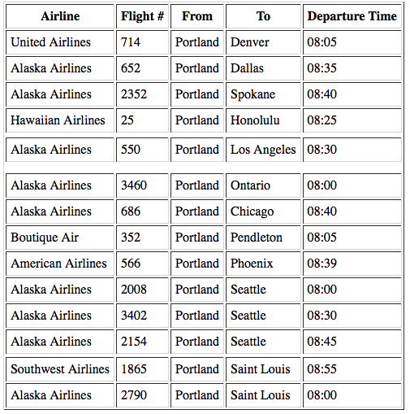

Airport Arrival and Departure Information
Using FlightStats API to request departures from an airport
After completing the simple flight tracking request, the next step is to move on to one of FlightStats' more comprehensive APIs. The schedules API is the service that is probably most relatable to most people as such services are what power the common "Arrivals and Departures" screens at airport or hotels. The current documentation for the API is found here, but does not explain how to parse or use the information after constructing an API call.
For this example, Portland International Airport (PDX) will again be used as a reference. Having seen how API calls are built up in the previous section, the structure of the API call to get all flight departure information from an airport on a certain day and time is: https://api.flightstats.com/flex/schedules/rest/v1/json/{departureAirportCode}/departing/{year}/{month}/{day}/{hourOfDay} The call to get flight departures from PDX on May 19th, 2017 around 8am is: https://api.flightstats.com/flex/schedules/rest/v1/json/from/PDX/departing/2017/5/19/8?appId=##&appKey=##
The JSON response is in the similar format to what was shown in the previous section

The expanded scheduledFlights section reveals a JSON element for each scheduled flight:

If we really want to do something with this information, we need to write code to streamline the API calls and subsequent processing. Previously we showed how to construct an API call, but now this will be encoded using the a GET request in JavaScript.
Let's break down what was done here. First, the html page creates a basic form to allow a user to enter the date and airport information. This form appears as:

The JavaScript section contains the important information. First, the line document.addEventListener('DOMContentLoaded', bindButtons); creates an event listener which calls the bindButtons function after the DOM content has loaded for the page. Next, the line document.getElementById('airportSubmit').addEventListener('click', function(event){...} adds an event listener to the user submitting the form. Then, the line var req = new XMLHttpRequest(); creates an instance of the an XMLHttpRequest object from which HTPP calls can be made to the FlightStats API. Now, the req.open call passes the information to the FlightStats server. This call has several parameters. First, the GET argument specifies that it is a get request. The second argument is the compound API request described above to specify the airport and date/time. The last argument (true) specifies that this is an asynchronous call. An asynchronous request means that the website does not wait for information to be received before proceeding with code execution. Rather, the request is sent and the information is processed only after it has been received at some point in the future.
Continuing with the code, a loop is created to step through each of the scheduledFlights element in the JSON response and grab key information from each flight. The following code creates a new html header tag and appends key information about each flight to website:
var flight = document.createElement('h1');
flight.setAttribute('id', 'flight'+i);
document.body.appendChild(flight);
This information is starting to become useful, but there are several issues. First, it is not very clear which airline is represented by the airline code. "UA" probably means United, but "KE" is less obvious. Second, it appears that many of the flights appear several times and are actually not different flights. For example, the flight to LAX at 8:30am appears 5 times. Lastly, the airport codes are also not very clear. "LAX" is well known but "GEG" does not ring a bell.
The first thing we could do is create a table using the DOM and dynamically add rows with the flights instead of adding headers as was done previously.
The resulting table looks a lot better than before.
 Repetitive flights were eliminated by concatenating the flight time and destination since these are code share flights that appear as multiple flights. var tempFlight = response.scheduledFlights[i].arrivalAirportFsCode+response.scheduledFlights[i].departureTime;
Saving this data as tempFlight allows the current flight to be compared to the previous flight and the current flight is skipped if it matches the previous one.
To address the second issue of unclear airline and city names, two functions were created to parse the airline code and city code with the Appendix object in the JSON response.
function getAirline(airlineCode){
for ( var i =0 ; i < response.appendix.airlines.length; i++ ){
if (response.appendix.airlines[i].fs == airlineCode)
{
return response.appendix.airlines[i].name;
}
}
return "Unknown";
}
function getCityName(airportCode){
for ( var i =0 ; i < response.appendix.airports.length; i++ ){
if (response.appendix.airports[i].fs == airportCode)
{
return response.appendix.airports[i].city;
}
}
return "Unknown";
}And the resulting table now appears as:
This looks a lot better. The airlines are cities are now clearly spelled out and there are no redundant flights. The code was also shortened in several places by creating functions such as createHeader and createRow to handle the repetitive task of adding data to the table. We could continue to improve this table more by sorting the flights by time or city name. Interestingly, the flight data received from the API call does not appear to be in any order. Rather than do that, let's move on to look at another API call to synthesize more information together.